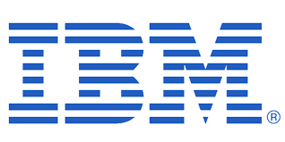
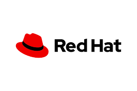
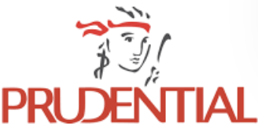
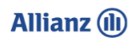

Less manual work
Reduce repetitive document handling and give teams more time for complex cases.
BOIT / BANKING & INSURANCE
BOIT brings specialist expertise, AI agents, and connected workflows together to simplify operations and improve customer experiences.
AI synthesises feedback and tickets into specs; teams validate stories and wireframes together.
BETTER EVERYDAY OPERATIONS
Reduce repetitive document handling and give teams more time for complex cases.
Coordinate tasks and handoffs so work moves forward with fewer delays.
Bring evidence and case context together to support reviews and compliance checks.
Help customers and advisors get clearer answers and timely updates.
FIND YOUR SOLUTION
Connect onboarding, document processing, operational workflows, and customer service with AI-assisted banking capabilities.
Explore banking capabilities →Support claims, underwriting, and policy servicing with connected evidence, specialist agents, and coordinated workflows.
Explore insurance solutions →THE BOIT DIFFERENCE
Our agentic journey brings industry knowledge, specialist AI agents, and orchestration together—helping banks and insurers move from isolated automation to connected, adaptable operations.
BOIT’s own LLM is fine-tuned for banking and insurance language and workflows, helping teams turn complex documents and requests into useful evidence and clear next steps.
Less time interpreting information. More time applying expertise.
Multiple specialist agents handle focused tasks such as extraction, comparison, risk screening, and case summaries, supporting teams across the customer and operational journey.
Reduce repetitive effort and respond to changing workloads.
Agent orchestrators coordinate tools and tasks, carry context between stages, and bring people into exception reviews—supporting configurable business rules and compliance checks.
Fewer handoffs. Clearer accountability. More agile operations.
Identify the bottleneck, connect the right knowledge and agents, introduce review checkpoints, and refine the workflow against your business priorities.
Designed to support human oversight and compliance reviews. Capabilities depend on the solution and connected systems.
Explore our products →MY INTERACTIVE AGENT
MIA is BOIT’s AI guide to banking and insurance. Explore our solutions, ask questions, and find a clearer path through complex information.
Live voice requires an active API connection. The recorded introduction is available in the preview; live lip sync and CaseX access are not connected yet.
WHY BOIT
Business knowledge, engineering expertise, and global teams working together across banking and insurance.
Industry experience across our leadership.
Domain and technical consultants.
Banking and insurance clients.
A connected global presence.




Singapore · United Arab Emirates · Malaysia · Indonesia · India · South Africa
Get to know BOIT →LET’S TALK
Tell us where your teams face complexity. Let’s explore how BOIT can help.
Talk to our team ↗